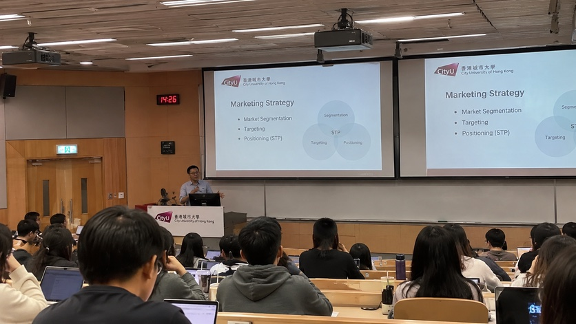

How Classes Work at CityU: Lectures vs Tutorials
Most courses have two parts:
- Lectures: big rooms, sometimes 100+ students. Mostly listening. Some are recorded.
- Tutorials: 10 to 30 students. This is where the discussion, group work and a lot of the grading happen.
Skipping a lecture is often not noticed. Skipping tutorials is.
What that means for your grade
- Participation counts. Many tutorials give marks for speaking up. Being quiet can read as not having prepared, even if you're just shy.
- Finals are heavy. In many courses the final exam is 40% to 60% of the grade. Midterms cluster around weeks 8 to 10, so there is no quiet middle of semester.
- Group projects are everywhere. Expect mixed groups of local and exchange students. Set up a WhatsApp group in week one and agree on deadlines early.
- Attendance rules are real. Some lecturers deduct marks for missed tutorials. Read the syllabus in week one.

Canvas, email and the apps you'll use every day
- Canvas is where your slides, readings, assignments and grades live. Check it every week. Deadlines move, and nobody will chase you.
- AIMS is for registration, your timetable and official records.
- CityU email is where your lecturers and the exchange office will contact you. Forward it to your phone.
- Office hours are often empty. Use them. Lecturers who seem formal in a big lecture hall are usually helpful one-on-one.